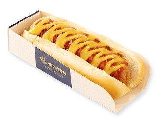
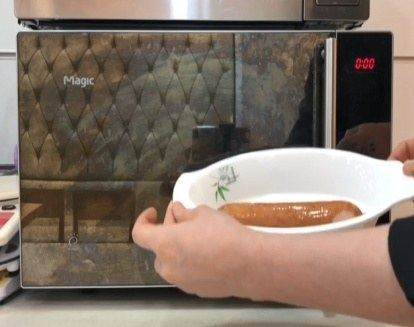
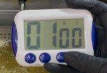
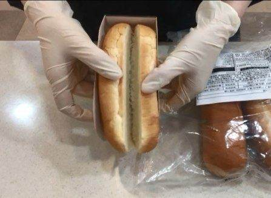
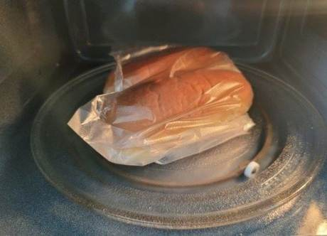
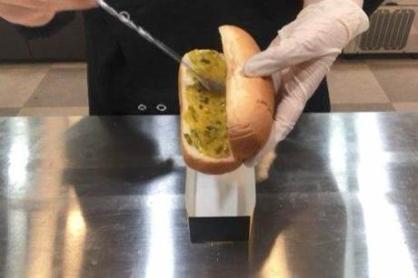
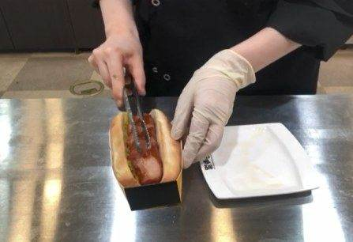
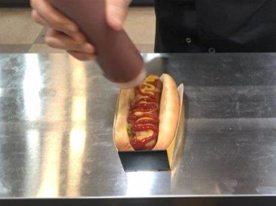
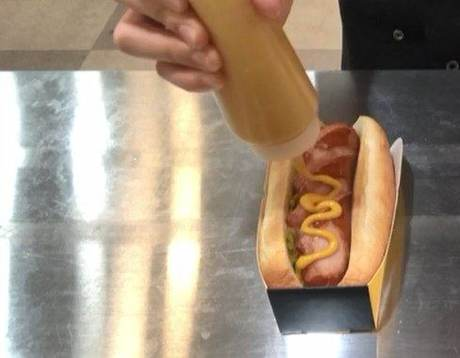

| 메뉴명 | 브리오슈 오리지널 핫도그 |
|---|---|
| 판매가격 | 5,500원 |
| 원재료 | 핫도그소시지, 브리오슈핫도그빵, 랠리쉬피클, 허니머스터드소스, 케찹 |
| 사용 부자재 | 핫도그트레이 |
| 메뉴특징 | 촉촉한 핫도그번에 육즙이 가득한 소시지와 아삭하고 새콤달콤한 피클을 넣은 기본 핫도그 |
조리방법

1
칼집 낸 소시지 1개를 700W 전자레인지에서 1분간 데워준다.
칼집 낸 소시지 1개를 700W 전자레인지에서 1분간 데워준다.

2
데운 소시지를 180도 튀김기에 넣어 1분간 튀겨준다.
데운 소시지를 180도 튀김기에 넣어 1분간 튀겨준다.

3
냉동 브리오슈 핫도그빵 1개는 칼집 부분을 살짝 벌려준 뒤, 위생봉투에 담아준다.
냉동 브리오슈 핫도그빵 1개는 칼집 부분을 살짝 벌려준 뒤, 위생봉투에 담아준다.

4
700W 전자레인지에 위생 봉투째 넣어 30초간 데워준다.
700W 전자레인지에 위생 봉투째 넣어 30초간 데워준다.

5
핫도그트레이를 조립한 뒤, 데온 핫도그빵을 올린다.
핫도그트레이를 조립한 뒤, 데온 핫도그빵을 올린다.

6
랠리쉬피클 20g을 핫도그빵에 펴 발라준다.
랠리쉬피클 20g을 핫도그빵에 펴 발라준다.

7
그 위에 튀긴 소시지를 넣어준다.
그 위에 튀긴 소시지를 넣어준다.

8
케찹 5g을 지그재그로 뿌려준다.
케찹 5g을 지그재그로 뿌려준다.

9
허니 머스터드 5g을 지그재그로 뿌려준다.
허니 머스터드 5g을 지그재그로 뿌려준다.